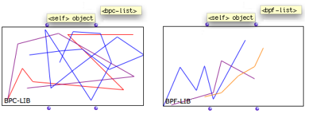
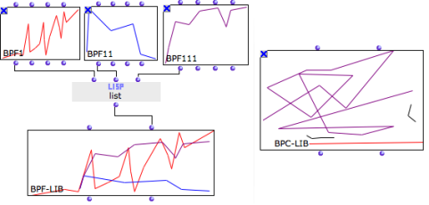

OpenMusic DocumentationHiérarchie de section : OM 6.6 User Manual > Basic Tools > Curves and Functions > BPF/BPC-Libs
OpenMusic DocumentationHiérarchie de section : OM 6.6 User Manual > Basic Tools > Curves and Functions > BPF/BPC-Libs
Navigation : page précédente | page suivante
Attention, votre navigateur ne supporte pas le javascript ou celui-ci à été désactivé. Certaines fonctionnalités de ce guide sont restreintes.
Multiple Objects : BPF/BPC-Lib

|
BPC-lib and BPF-lib objects are collections of BPFs and BPCs. |
Properties
BPF-libs and BPC-libs have two inputs and outputs :
"self" : the object itself, a BPF-Lib or BPC-Lib
"bpf / bpc list" : a list of BPFs or BPCs.

Creating BPF-Libs or BPF-Libs in a patch
BPF-lib and BPC-lib instances can be created
- out of existing BPFs or BPCs gathered in lists.
- via their respective editors.

Abscissa Scale
The BPF-lib or BPC-lib precision is automatically adapted to the highest "decimal" value of the BPF or BPC objects of the list.
Références :
Plan :
Navigation : page précédente | page suivante
A propos...(c) Ircam - Centre Pompidou